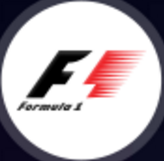
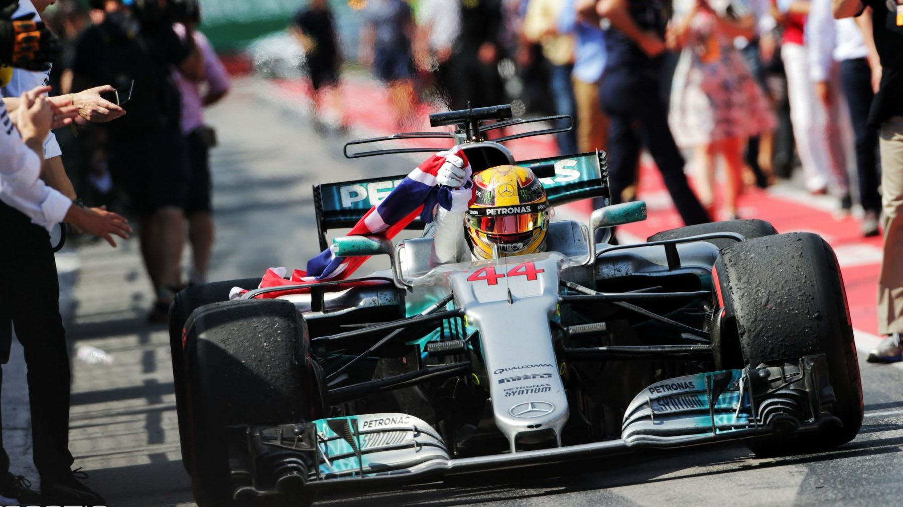

世 界 一 级 方 程 式 锦 标 赛

世界一级方程式赛车锦标赛是当今世界最高水平的赛车比赛，年收视率高达600亿人次。F1比赛可以说是高科技、团队精神、车手智慧与勇气的集合体。F1是赛车中的顶级赛事，全年的统筹安排，每站比赛的赛事组织，车队工作，电视转播等各个方面都井井有条，F1世界已被整改得经非常健全。但同任何其他事物一样，F1也有它的起源、发展过程，而且在前进道路上也有不少曲折。
从历史上首次汽车比赛的1894年（巴黎到里昂）到 1900年间没有出现“方程式”（Formula）一词。当时的汽车比赛很简单，只是按燃烧方法（汽油机与蒸汽机）、座位数来分组比赛。在那时，汽车至少有两个座位，直至二十世纪二十年代末单座赛车才出现。1950年国际汽联第一次举办了世界锦标赛（First FIA Drivers’ World Championship），并一直举办到今天。这段时间，是F1稳步发展的阶段。2011年，F1赛车共12支车队的24名选手参赛，引擎供应商为：考斯沃斯、法拉利、奔驰、雷诺，轮胎供应商为Pirelli ，2011年赛季冠军为来自红牛（Red Bull Racing） 车队的德国车手塞巴斯蒂安-维泰尔（Sebastian Vettel）。2013年HRT车队破产，全年共11支车队，22位车手参赛。
F1赛车为单座的特制赛车，座舱是敞露在外的，巨大的轮胎也是暴露在车身外面的，没有翼子板遮挡。F1赛车不能在普通道路上行驶，在汽车厂的流水线也不生产，而是由各赛车公司或车厂的赛车运动部单独设计和制造的。
就像一般的道路驾驶一样，F1也需要驾照。那是一张由FIA（国际汽车联合运动理事会，简称“国际汽联”）发给的“超级驾照”－－FIA Super Licence，这张车手执照只发给在F3000，F3或CART系列赛事表现杰出的车手。
Copyright © 2016－2017 Hebshufajia.com,All Rights Reserved